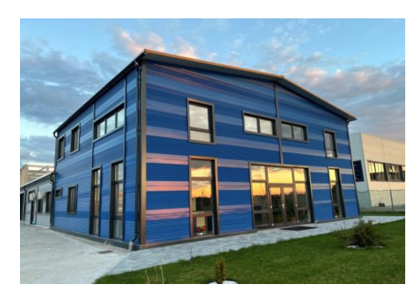
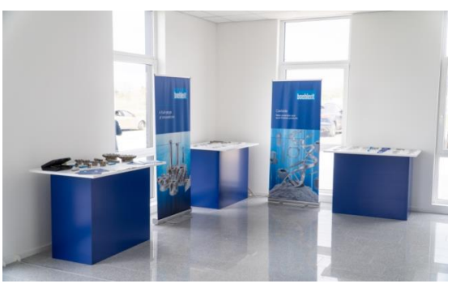
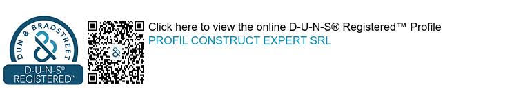
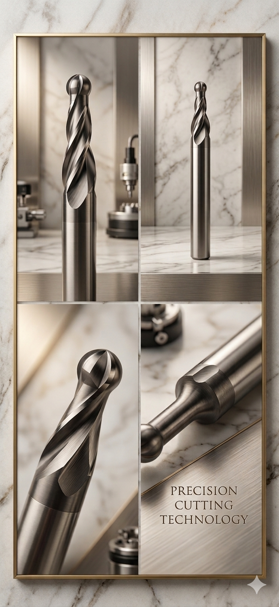
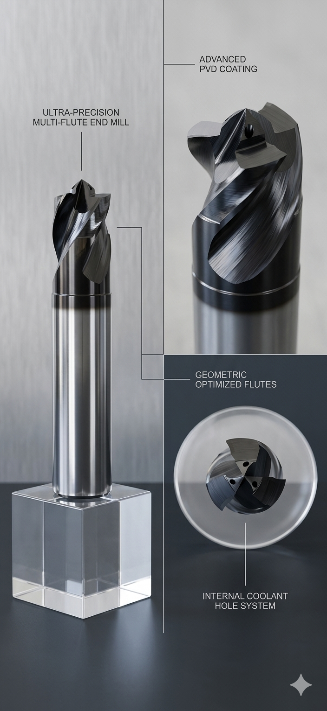
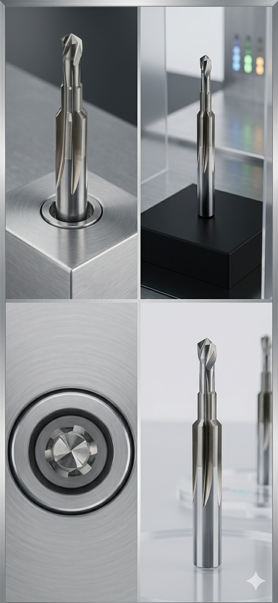
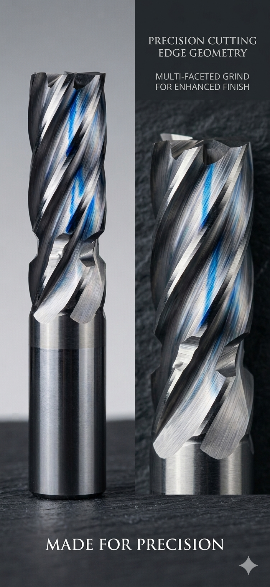
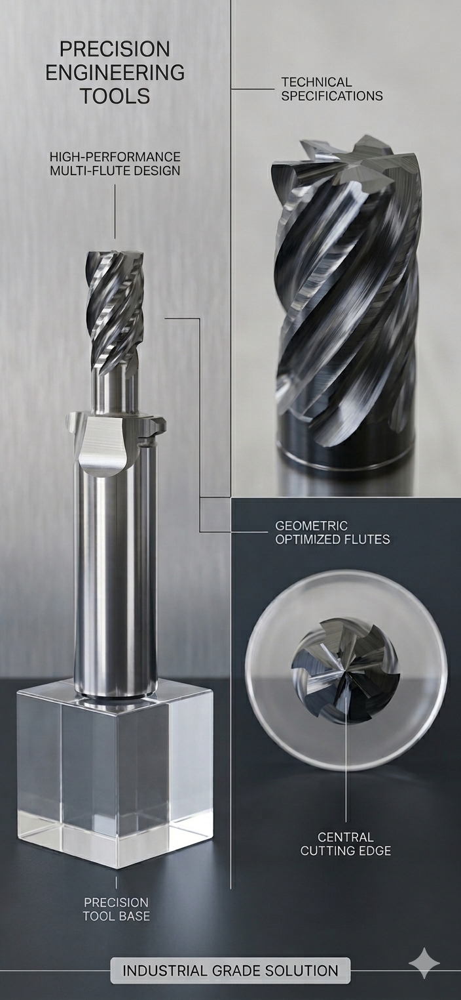
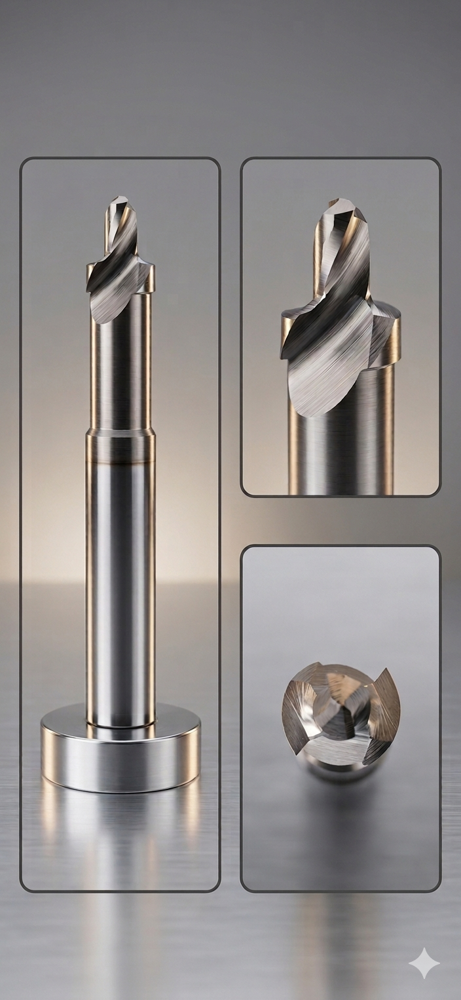
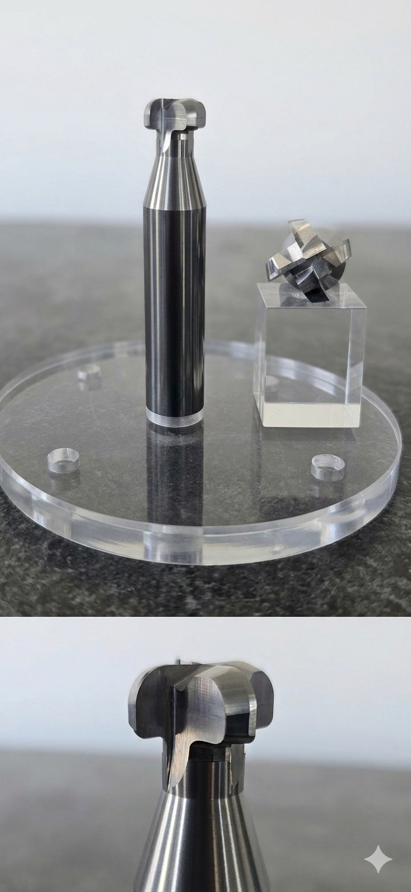

PREZENTARE
PCE Tools
SC PROFIL CONSTRUCT EXPERT SRL
SC Profil Construct Expert SRL este o societate comercială cu capital privat integral românesc înființată în anul 2008, cu sediul in Oradea, jud. Bihor, România.
Activitate & Experiență pe Piață
De 18 ani ne desfășurăm activitatea pe piața industrială din România, oferind scule așchietoare și servicii conexe firmelor românești din domeniul prelucrării metalelor prin așchiere.
Evoluție în echipă
Suntem conștienți de faptul că performanța și evoluția companiei se datorează unei echipe profesioniste de oameni dedicați, care astăzi se găsesc în birouri zonale din Oradea și Pitești.


Misiune, Viziune și Principii
Misiunea noastră
Misiunea noastră este să oferim produse și servicii de cea mai înaltă calitate clienților și partenerilor noștri în vederea creșterii productivității.
Viziunea noastră
Să păstrăm și să îmbunătățim standardul înalt oferit clienților în pas cu evoluția tehnologică și dinamica domeniilor industriale în care activăm.
Parteneriate bazate pe încredere
Suntem adepții parteneriatelor bazate pe corectitudine și încredere, urmărind obținerea de beneficii comune atât în relația cu clienții, cât și cu furnizorii.
Cultura Organizațională & Obiective
Succesul nostru se bazează pe spiritul de echipă și încrederea acordată de partenerii noștri. Încurajăm inovarea, inițiativa, dialogul deschis și responsabilitatea.
Obiectivul principal al firmei noastre
Răspunderea la cerințele multiple ale clienților printr-un portofoliu larg, oferindu-le un sprijin complet în consultanță tehnică, achiziția și livrarea întregului necesar de echipamente.
Activitate Principală & Certificări
Activitatea firmei noastre este recunoscută și certificată pentru sistemul de management EN ISO 9001:2015. Deținem de asemenea și certificare D-U-N-S.
Ne-am specializat pe oferirea unor soluții și pachete complete de așchiere în domeniul prelucrării metalelor, iar din 2013 am integrat producția de scule speciale la temă și reascuțirea.
Certificare Internațională de Bonitate

1. Comerț cu Scule Așchietoare Standard
📦 Strunjire & Frezare
- Program complet strunjire și frezare (corpuri cu plăcuțe + freze de carbură monobloc).
- Decojire țevi (=bar peeling) și debitare (=grooving).
🎯 Găurire & Filetare
- Găurire (plăcuțe, carbură, HSS), alezoare și tarozi.
- Portscule ISO, BT, HSK, VDI și scule speciale cu plăcuțe diamantate PCD.
2. Producție de Scule Speciale (Marca PCE Tools)
Realizăm la temă, conform desenului tehnic, unelte speciale non-standard (burghie combinate, alezoare, freze profilate) fabricate din carbură premium marca Boehlerit Austria.
Capacitate Tehnică: 5 centre CNC în 5 axe (2 cu robot încorporat). Finisare la mașină de rectificat rotund (rugozitate 0.2 microni, bătaie max 2 microni).
Execuție ultra-rapidă în 24/48 ore oricât de complexă este piesa.
Portofoliu Scule Speciale — Partea I
💡 Click pe orice imagine pentru a mări scula la rezoluție completă.




Portofoliu Scule Speciale — Partea II
💡 Click pe orice imagine pentru a mări scula la rezoluție completă.




3. Servicii de Ascuțire, Acoperire & Mediu
🛠️ Reascuțire & Acoperiri PVD
Deținem 4 centre CNC în 5 axe pentru reascuțire și colaborăm cu Oerlikon și Duratek pentru servicii de acoperire performante.
♻ Colectare și Reciclare
Colectăm autorizat carbură metalică uzată (plăcuțe, burghie, freze), având certificare de mediu.
⏱ Livrare: 24 Ore (Stoc) | 3-5 Zile (Ascuțire fără acoperire).
DATE DE CONTACT
SC PROFIL CONSTRUCT EXPERT SRL
📍 Str. Beothy Odon, nr. 9A, Oradea, jud. Bihor, România
📞 0745411695 / 0744679543
✉ office@pcetools.ro / viorel@pcetools.ro
Cod fiscal: RO24308300 | J2008002050056